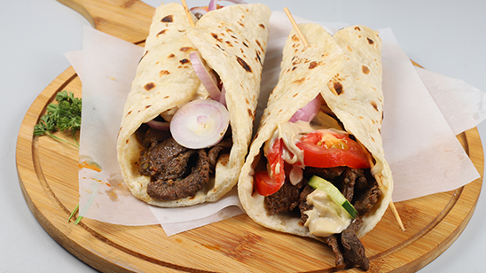

beef burger
1.000 kd
½ tbsp olive oil 1 onion, peeled and finely chopped 1 x 500g pack British Beef Steak Mince 15% fat 1 tsp mixed dried herbs 1 egg, beaten 4 slices mature Cheddar (optional) 4 white rolls few round lettuce leaves, torn 1 beef tomato, sliced ketchup, to serve (optional)
zinger burger
1.000 kd
3 Chicken breasts (sliced to 5 or 6, about 500 grams) ¼ cup plain yogurt / curd (for brine) ¼ tsp all spice powder or pepper powder. 1 cup all-purpose flour or rice flour (prefer organic / unbleached/ unbromated ) 1 ¼ cup bread crumbs. 1 egg (prefer organic) Oil for deep frying. 6 burger buns.

fish burger
0.350 kd
400 gm fish. 1 egg. 2 1/2 tablespoon dijon mustard. 3/4 teaspoon salt. 3/4 teaspoon paprika. 1/4 teaspoon basil. 4 burger buns. 1 cucumber. 1/2 cup panko breadcrumbs. 1 egg whites. 2 cloves minced garlic. 3/4 teaspoon onion powder. 1/4 teaspoon spice black pepper. 1 1/2 teaspoon vegetable oil. 1 tomato. 4 tablespoon mayonnaise.

beef shawarma
0.350 kd
1 lb Skirt steak, thinly sliced (1 inch thick) flank steak or sirloin will work too. 2 tbsp Lemon juice. 2 tbsp White Vinegar. 2 tbsp Olive oil. 1/2 tbsp Paprika. 1 tsp Cumin. 1 tsp Garlic powder. 1 tsp Chili powder. 1 tsp Ground Coriander. 1 tsp 7 spice. 1 tsp Salt. 1/2 tsp Black pepper. 1/2 tsp Turmeric. 1/2 tsp Cinnamon.

chicken shawarma
0.350 kd
200 gm chicken boneless. 2 tablespoon vegetable oil. 1 teaspoon spice cardamom. 1/2 cup tahini. 2 tablespoon lemon juice. 1 handful chopped parsley. 2 sliced tomato. 2 cup shredded lettuce leaf. 2 tablespoon allspice. 1 tablespoon vinegar. salt as required. 1 teaspoon black pepper. 2 tablespoon minced garlic. 2 tablespoon virgin olive oil. 1 cup plain greek yogurt. 2 medium sliced onion. 9 pita bread. 1 sliced carrot.